Cámara
La luz, a tus órdenes.
La cámara Fusion de los 18 Pro abre su diafragma hasta f/1,48 para la noche y lo cierra hasta f/4 para el paisaje.
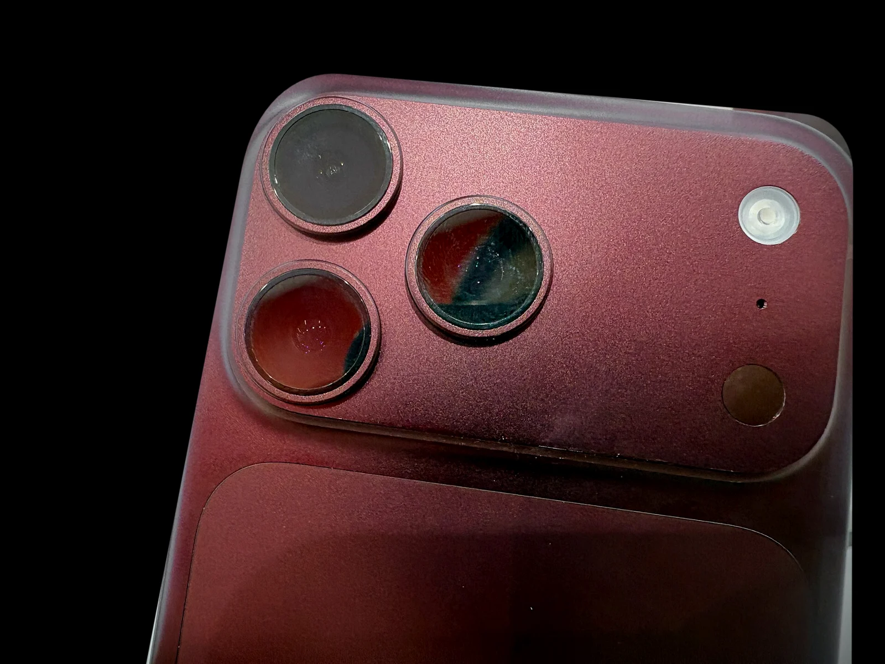
Gama auraPhone
AURA A20 Pro. El chip de 2 nm que mueve a los tres nuevos auraPhone: el primero que se pliega y dos Pro con cámara de apertura variable.
1.
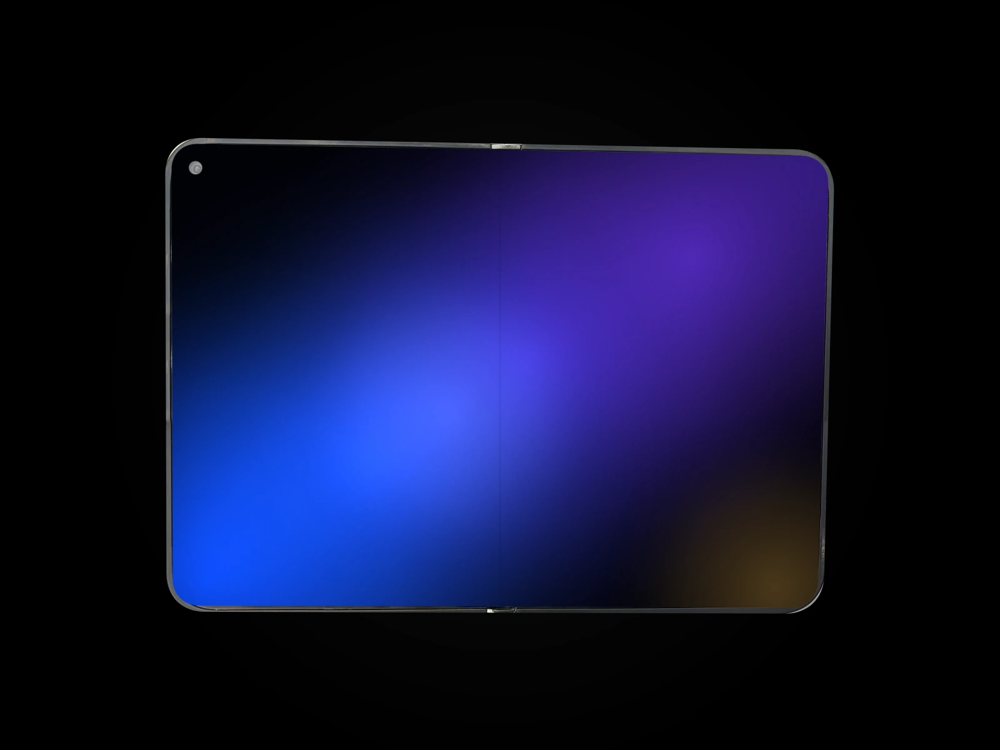
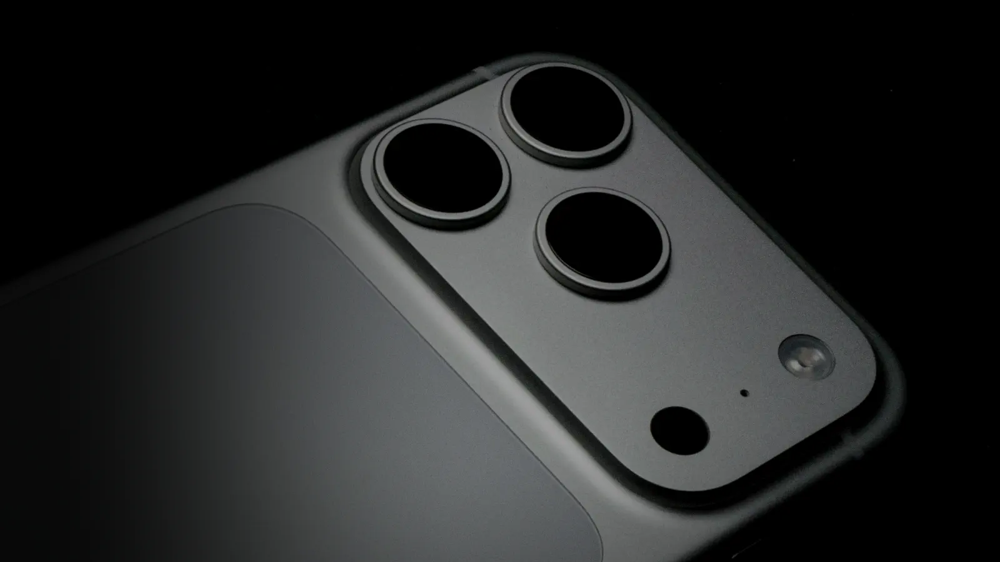
auraPhone 18 Pro
Una meseta de cámaras que cruza toda la trasera, un unibody de aluminio y el chip AURA A20 Pro.
Cámara Fusion de 48 Mpx
La primera cámara de auraPhone con apertura variable: se abre para la noche y se cierra para que todo el paisaje salga nítido.
auraPhone 18 Pro y 18 Pro Max, en negro, plata, azul glacial y burdeos.
Ver los modelosauraPhone 18 / En detalle
Seis razones para cambiar de teléfono.
Batería
El auraPhone 18 Pro Max aguanta una temporada entera. Con MagSafe de 25 W, el 50 % llega en unos 15 minutos.

auraPhone Duo / Plegable
El primer auraPhone plegable despliega una pantalla Super Retina XDR de 7,6 pulgadas sobre una bisagra de titanio. Cerrado, es un auraPhone de 5,4 pulgadas; abierto, pone dos apps lado a lado con Split View. Y dentro, el mismo AURA A20 Pro que los 18 Pro.

Diseño
La meseta de cámaras cruza toda la trasera y el aluminio lo envuelve todo, de una sola pieza.
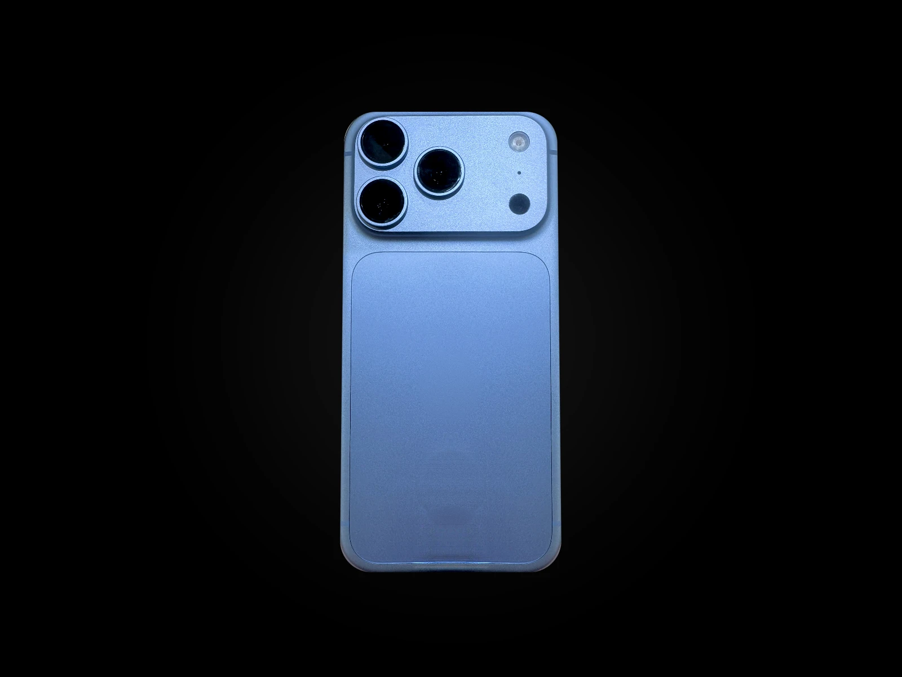
Ingeniería AURA
Un solo bloque de aluminio forma el chasis y la meseta de cámaras, y por delante lo protege Ceramic Shield 2. Es la misma estructura que reparte el calor del chip.
Solo
211 g
pesa el auraPhone 18 Pro
Con
8,8 mm
de grosor, los dos 18 Pro
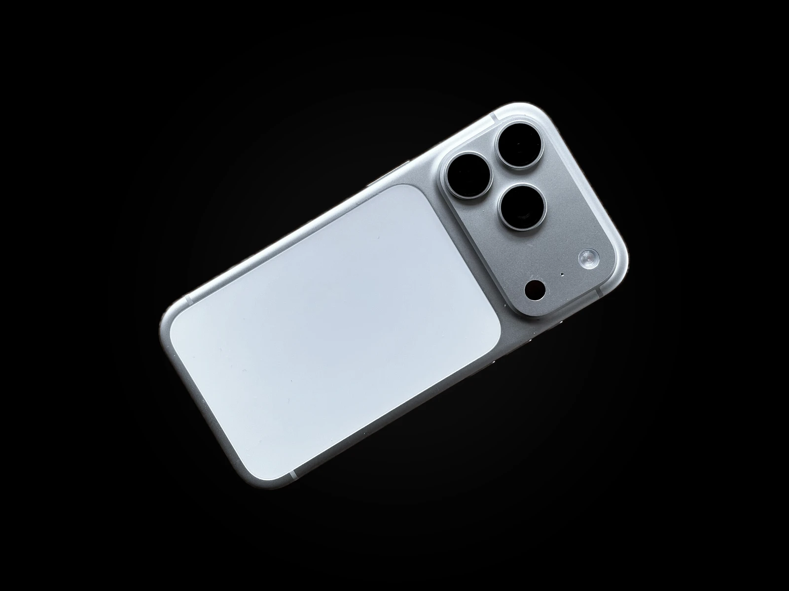
Pantalla Super Retina XDR
ProMotion ajusta la frecuencia hasta 120 Hz para que todo se deslice con suavidad, y el brillo sube hasta 3.000 nits cuando sales a la calle. En el 18 Pro Max, 6,9 pulgadas; en el 18 Pro, 6,3.
Hasta
3.000
nits de brillo máximo al aire libre
ProMotion
120 Hz
en los tres auraPhone, también en las dos pantallas del Duo
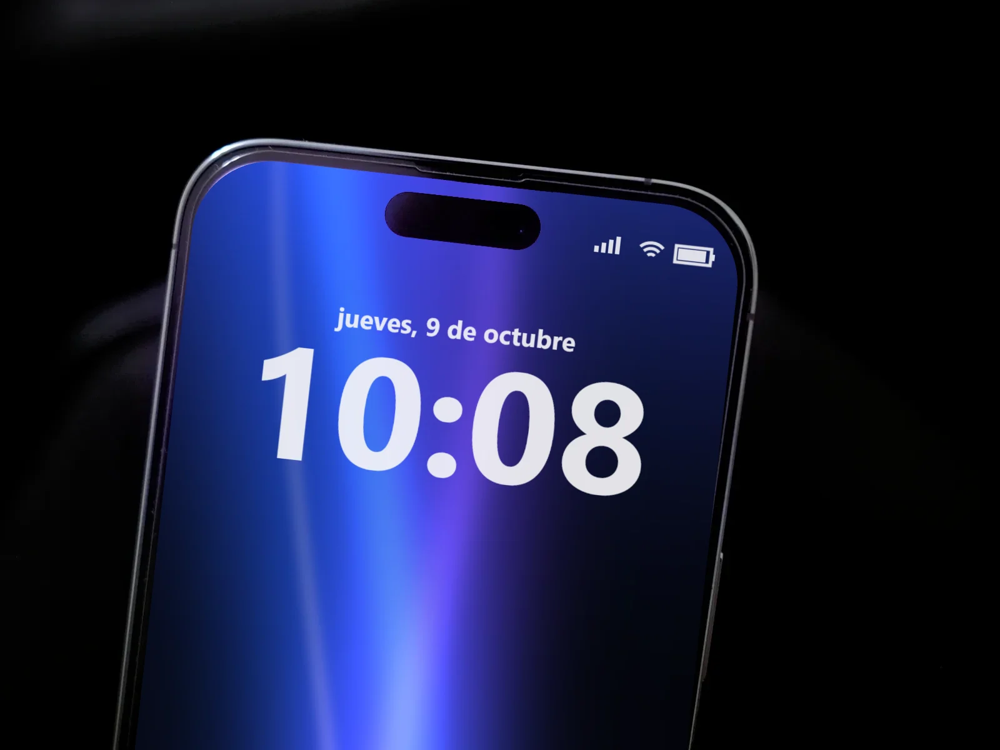
Cámaras
La cámara Fusion de 48 Mpx con apertura variable y un teleobjetivo de 48 Mpx que llega hasta x8 sin perder calidad.
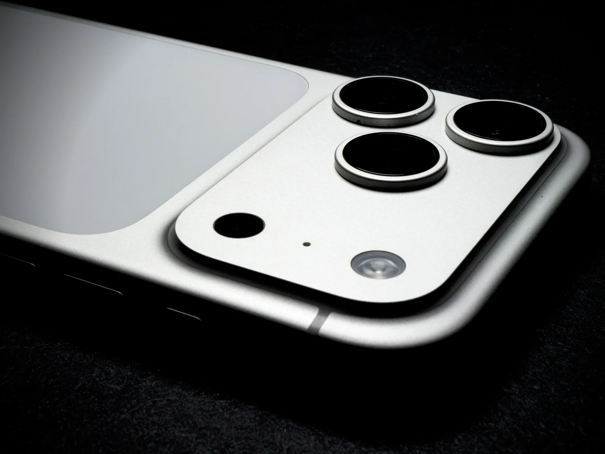
Cámara Fusion de
48 Mpx
en la principal y en el teleobjetivo
Apertura de
f/1,48
a f/4: la primera variable en un auraPhone
Zoom de calidad óptica
x8
con el teleobjetivo, como una focal de 200 mm3
Retrato, noche, macro y zoom: cuatro maneras de usar la cámara4.
AURA A20 Pro
El mismo chip en los tres auraPhone, con una cámara de vapor el triple de grande que sostiene el ritmo partida tras partida.
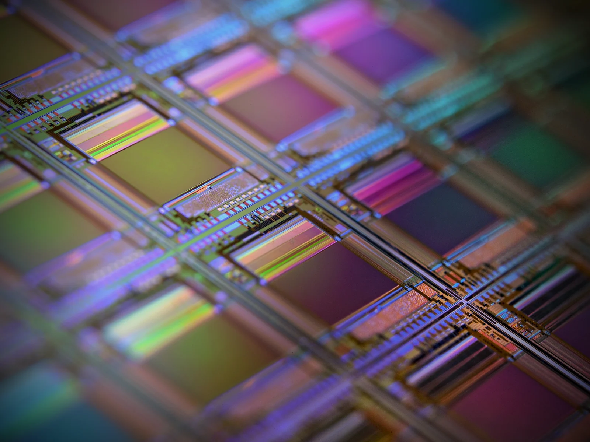
Fabricado a
2 nm
más transistores en el mismo espacio
CPU de
6 núcleos
y GPU de 7 núcleos para juegos y vídeo
Un
40 %
más de rendimiento sostenido, gracias a la cámara de vapor
Batería
Con MagSafe de 25 W, la mitad de la batería vuelve en lo que dura un café: unos 15 minutos en los 18 Pro y 20 en el Duo5.
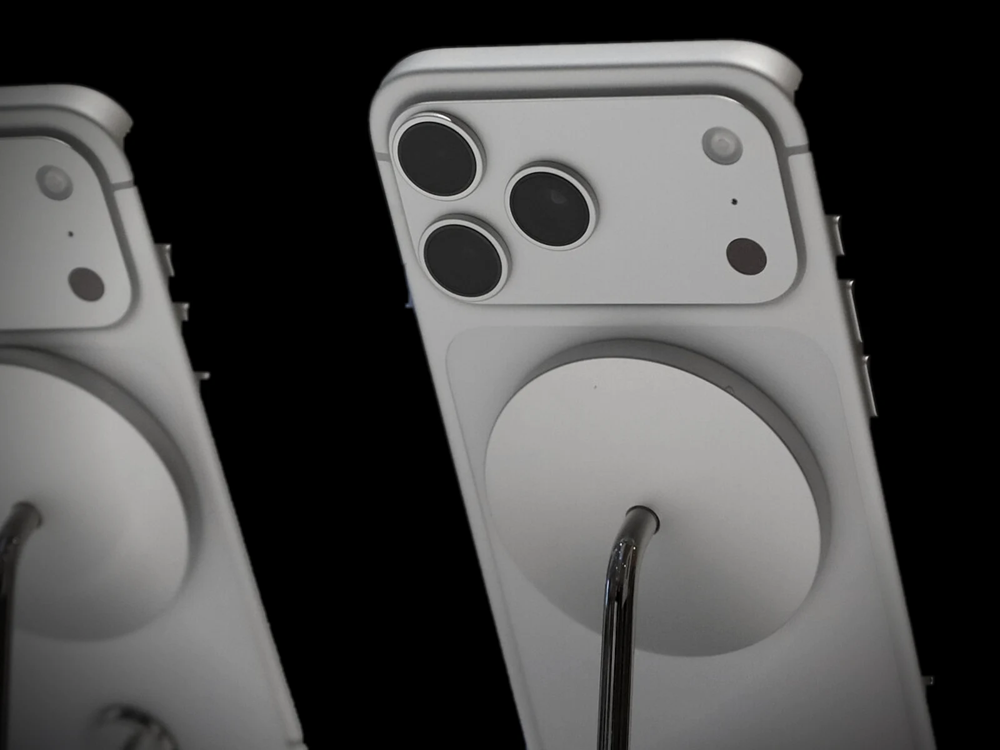
auraOS 27
AURA Intelligence resume, redacta y encuentra lo que buscas, en el propio auraPhone siempre que puede: tus datos no salen de casa6.
Un correo largo en tres líneas o una respuesta con el tono justo, sin salir de la app.
Hasta tres actividades en directo a la vez: el pedido, el partido y el temporizador.
Dos apps lado a lado en la pantalla de 7,6 pulgadas.
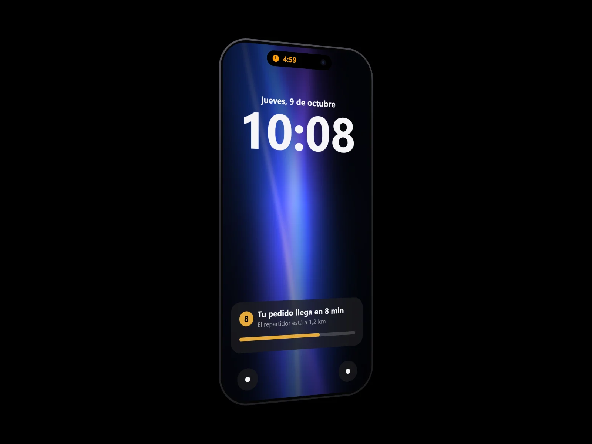
Privacidad y seguridad
Tu cara o tu huella desbloquean, pagan y rellenan contraseñas. Y lo que te identifica se queda en tu auraPhone.
Face ID en los 18 Pro y Touch ID en el botón lateral del Duo. Tus datos biométricos no salen del dispositivo.
Acercas el auraPhone al datáfono y confirmas con la cara o la huella, sin sacar la tarjeta.
Se rellenan solas al iniciar sesión, siempre después de reconocerte.
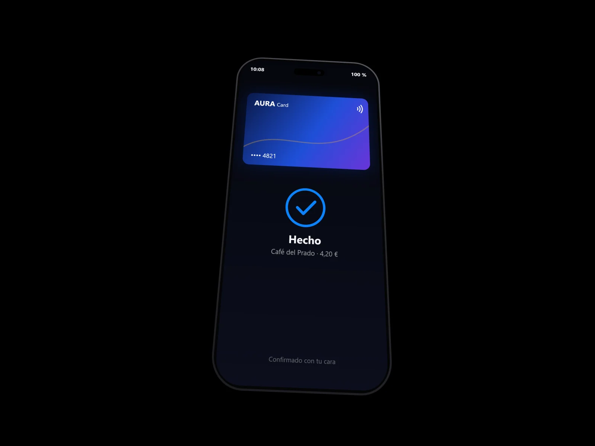
Medio ambiente
Un auraPhone que dura es el que menos huella deja. Y cuando lo cambies, el anterior tiene una segunda vida o se recicla con cuidado.
Accesorios MagSafe
Los tres auraPhone cargan con MagSafe de hasta 25 W: los imanes alinean la funda y el cargador a la primera.
Funda MagSafe
Se ajusta al milímetro, deja libres las tres cámaras y no estorba a la carga magnética.
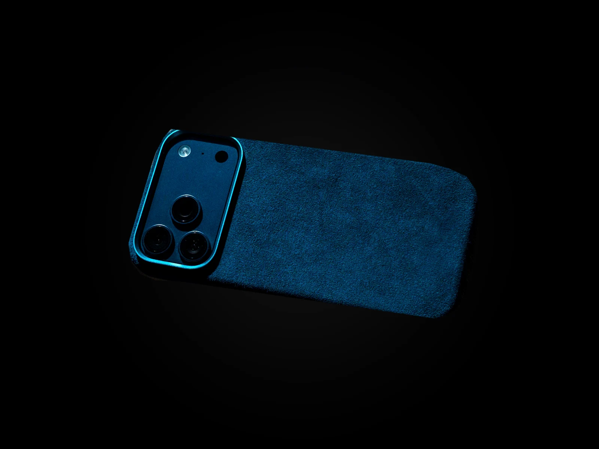
Cargador MagSafe
Lo acercas y se coloca solo; con un adaptador USB-C, carga a toda velocidad.
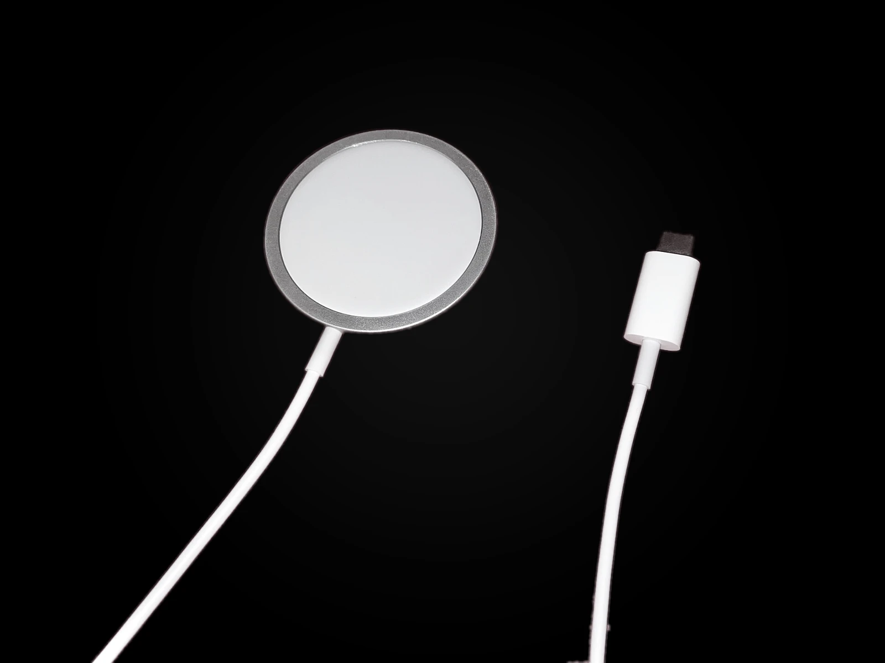
La gama / 2026
Tres formas de llevar el AURA A20 Pro. Todos con cámara Fusion de 48 Mpx, Wi-Fi 7 y USB-C.
Comparativa técnica
El mismo AURA A20 Pro en los tres. Cambia la forma; la ambición, no.
AURA Store